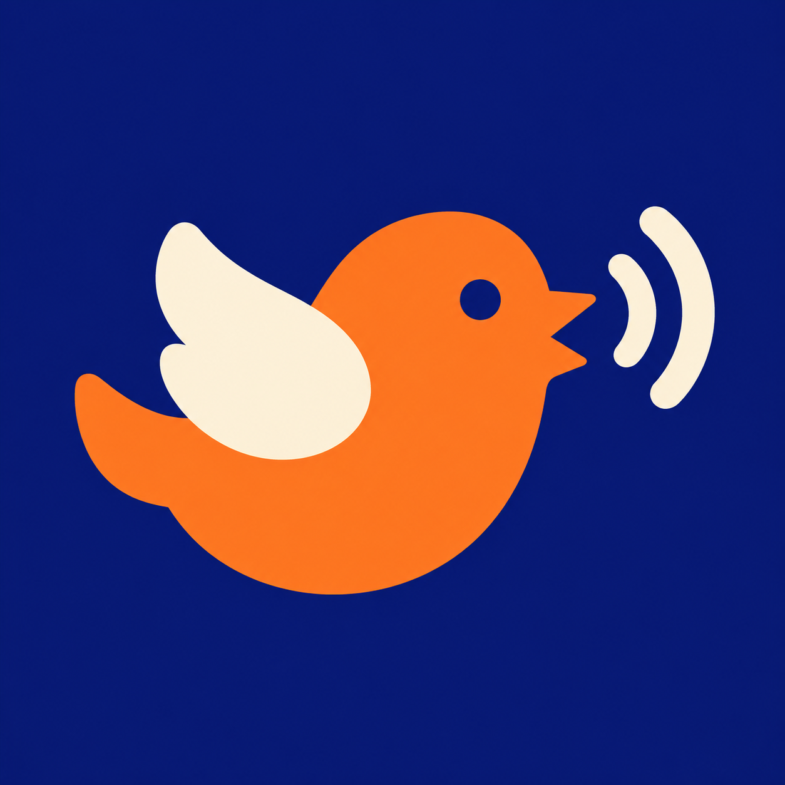
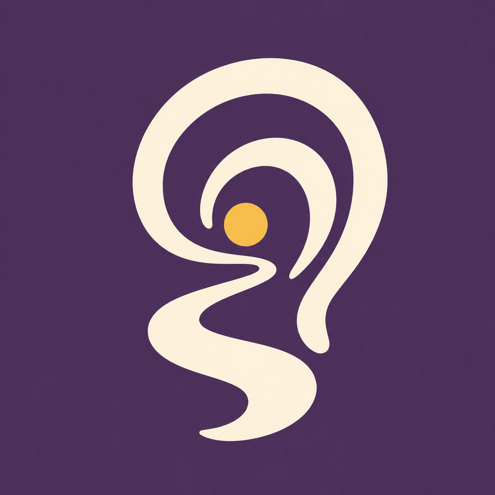
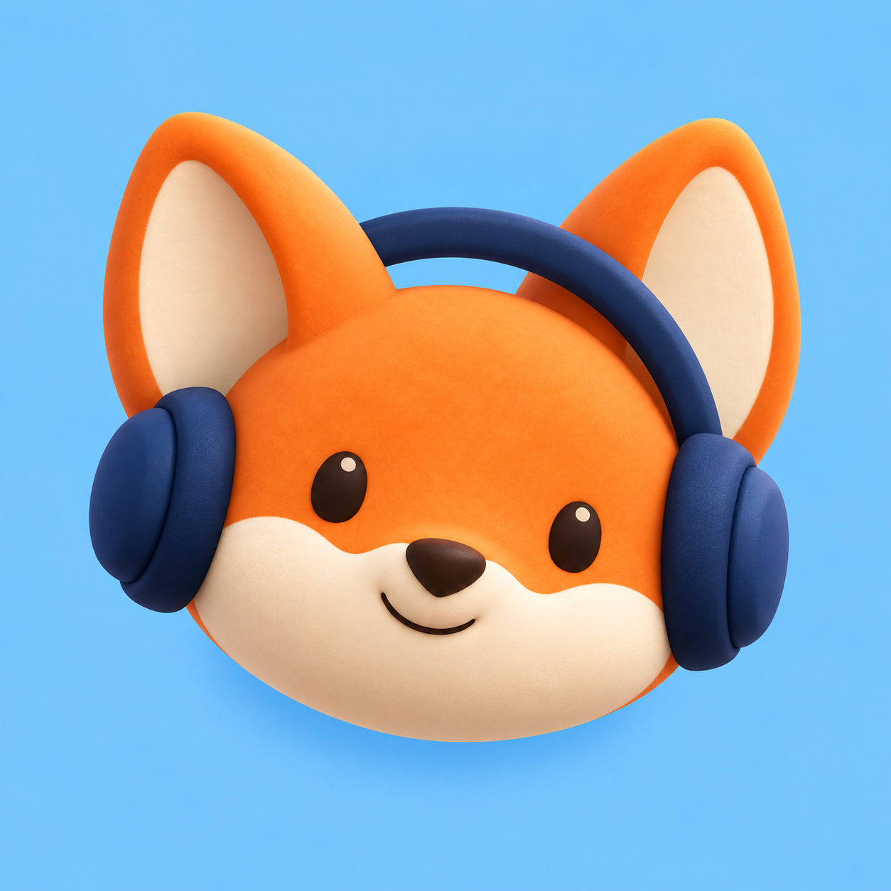
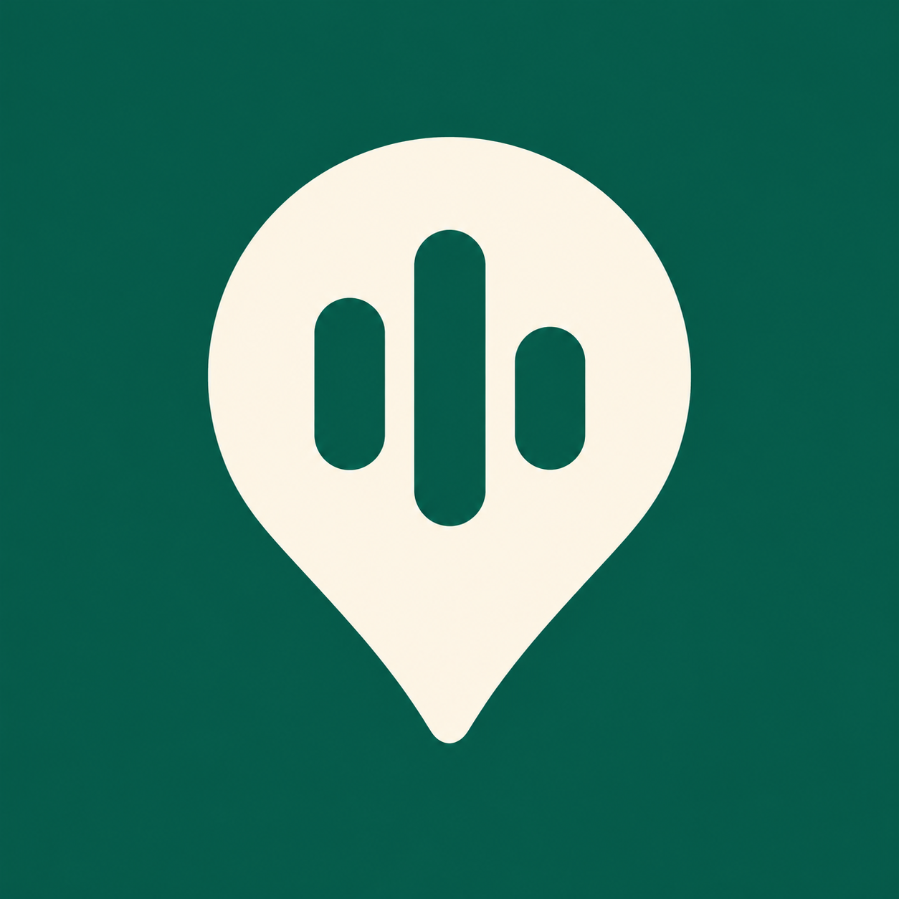
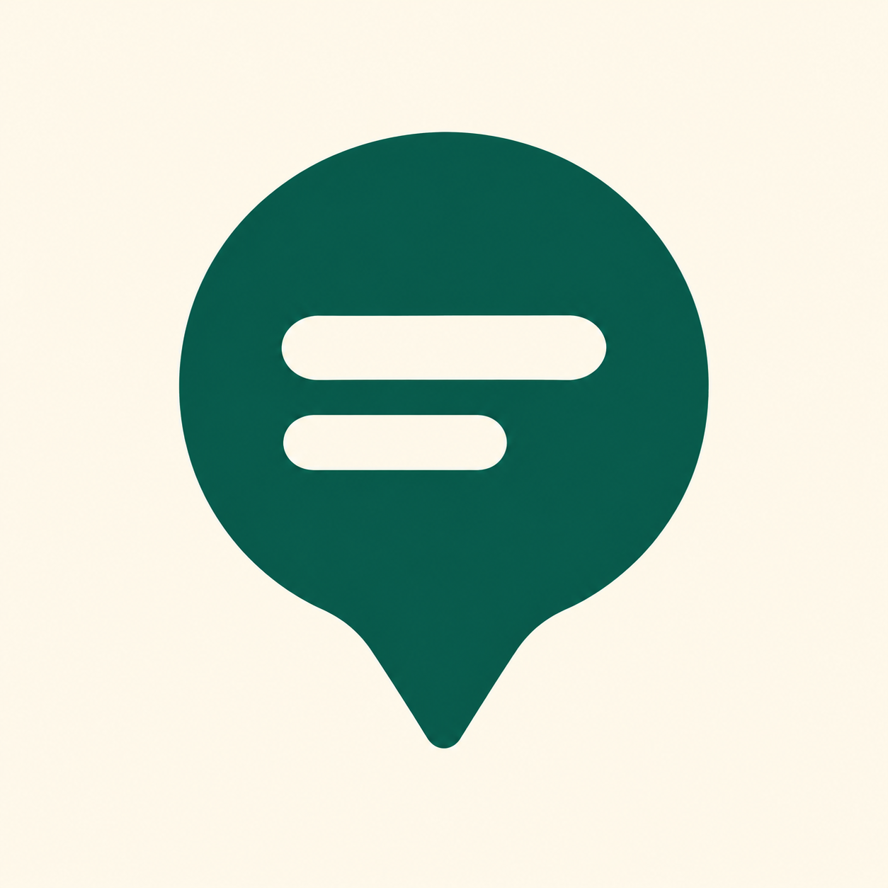

E：声を届ける小鳥
街の小話を教えてくれる小鳥。明るく、覚えやすいキャラクター寄りのマーク。
16px
32px
64px
アプリ表示例
今いる土地の小話を音声で届けるアプリの8つの方向性。今回追加したE〜Hと、前回のA〜Dを比較できます。
大きな画像と、faviconの16・32px、角丸のアプリ表示例を比較できます。画像をクリックすると原寸で開きます。

街の小話を教えてくれる小鳥。明るく、覚えやすいキャラクター寄りのマーク。

歩きながら耳を傾ける体験を表現。落ち着いた大人向けの雰囲気。
土地の風景と物語をつなぐマーク。知る楽しさと旅らしさを表現。

話を聞きたくなる旅の相棒。ホーム画面で目を引くマスコット方向。

場所と音声の両方を伝える。LocalVoiceの用途が最も伝わりやすい候補。

土地の小話が届く親しみやすさを表現。明るく穏やかな印象。
名前を覚えてもらうシンプルな形。音声や地域の意味は説明と合わせて伝える。
散歩・旅先での発見を表現。方向案内アプリの印象も強い。